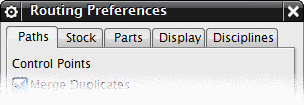

管线布置首选项
要指定经常使用的管线布置参数和选项的默认值，使用管线布置首选项对话框。

此选项卡上的选项指定了拐角首选项，曲线链、型材偏移值等。
在这里，您可以从管线布置重用库中选择您要添加到管线中的首选的型材、护套型材或空间预留型材。
当您向管线装配中添加部件时，您可以指定默认的目标图层。您也可以使用指定默认弯头来从管线布置重用库中选择弯头。此选项与创建线性路径对话框中的指派默认弯头选项结合使用。
除其他事项外，显示选项卡中的选项让您开启或关闭管线控制点(Routing Control Points，RCPs)，端口以及锚点。您还可以指定显示端口的大小。
当您选择标准件或型材时，学科将决定为您呈现哪个管线部件库。您选择一个学科后，只有与该学科相关关的部件会被加载到您的会话中。每个管线布置应用应用模块都可以有多个不同的学科，例如机械管线布置中的管道和软管，并且您可以在特定的管线应用模块中随时切换学科。
用户默认设置
要预设任何管线布置首选项，在用户默认设置对话框，展开管线布置。
从下列选项中进行选择：
这些选项在重启 NX 后方能生效。